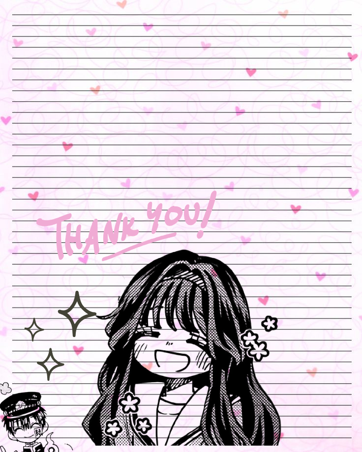

Click anywhere to enable audio playback.
────୨ৎ──── Halooooo after few hours of editing the designn finally writing thisss =͟͟͞͞ ⌧I just wanna say thank youu so muchh once againn! what you did last night actually really means a lot to me ₊˚⊹♡ like super duperr as in and this is a sign of my gratitude i really want to make something in returnn everything that you said is exactly what ive been wanting to hear from someone all these years huhuh so thank youuu so muchh And i also just wanna tell youu againn if you ever need helpp whatever it iss I wont judge or anything ⋆｡°✮🕷 so feel freee i really enjoy talking to youu °❀⋆.ೃ࿔*:･ and once again again AHAHAH thank youuu for letting me bother youu જ⁀➴ pew peww always stay hydrateddd yes yess matik since mainittt and whenever feel overwhelmedd take a deep breathhh ⊹˚. ♡。°˖ ᵎᵎ 💬 i enjoy adding this decor to the text made me feel like a girly girly HAHAHA WAIT THIS IS ADHD LITTERALY GETTING SIDETRACKED AAA anyways AHAHHAH Thank youuu alwaysss good healthh for alll of youu yes and always take caree ────୨ৎ──── ⠀⠀⠀⠀⠀⠀⠀⠀⠀⠀⠀⠀⠀⠀⠀⠀⠀⠀⠀⠀⢎⠱⠊⡱⠀⠀⠀⠀⠀⠀ ⠀⠀⠀⠀⠀⠀⠀⠀⠀⠀⠀⢀⡠⠤⠒⠒⠒⠒⠤⢄⣑⠁⠀⠀⠀⠀⠀⠀⠀⠀ ⠀⠀⠀⠀⠀⠀⠀⢀⡤⠒⠝⠉⠀⠀⠀⠀⠀⠀⠀⠀⠀⠉⠲⢄⡀⠀⠀⠀⠀⠀ ⠀⠀⠀⠀⠀⢀⡴⠋⠀⠀⠀⠀⣀⠀⠀⠀⠀⠀⠀⢰⣢⠐⡄⠀⠉⠑⠒⠒⠒⣄ ⠀⠀⠀⣀⠴⠋⠀⠀⠀⡎⠀⠘⠿⠀⠀⢠⣀⢄⡢⠉⣔⣲⢸⠀⠀⠀⠀⠀⠀⢘ ⡠⠒⠉⠀⠀⠀⠀⠀⡰⢅⠫⠭⠝⠀⠀⠀⠀⠀⠀⢀⣀⣤⡋⠙⠢⢄⣀⣀⡠⠊ ⢇⠀⠀⠀⠀⠀⢀⠜⠁⠀⠉⡕⠒⠒⠒⠒⠒⠛⠉⠹⡄⣀⠘⡄⠀⠀⠀⠀⠀⠀ ⠀⠑⠂⠤⠔⠒⠁⠀⠀⡎⠱⡃⠀⠀⡄⠀⠄⠀⠀⠠⠟⠉⡷⠁⠀⠀⠀⠀⠀⠀ ⠀⠀⠀⠀⠀⠀⠀⠀⠀⠹⠤⠤⠴⣄⡸⠤⣄⠴⠤⠴⠄⠼⠀⠀⠀⠀⠀⠀⠀⠀ ────୨ৎ──── this really cant express my thanks to youu but yess ill always remember thiss thank youu thank youu I'm alsoo really gladd to know more of youu looking forward to getting to know youu ✧˖°.✧˖° also fun fact nothing starts with n and ends with g crazy right ⸜(｡˃ ᵕ ˂ )⸝♡ I really hope this works on phone since i made it on my laptop huhuh originally going to go with a tbhk themeed thoo cant find a matching stylee and colorr alsoo thanks to youu i get to have a good sleep because of the asmrr you sent it really helpss thank and alsoo just wanna clarify like if everr uhhh health > chats so yess just wanna clarify that againn and if school > chat yes my programming brain excuse that AHAHHAH commonly used to compare values so yep ehe ≽^• ˕ • ྀི≼ ⠀⠀⠀⠀⠀⠀⠀⠀⠀⠀⠀⠀⡴⢣⡄⠀⠀⠀⠀⠀⠀⠀⠀⠀⠀⠀⠀ ⠀⠀⠀⠀⠀⠀⠀⠀⠀⠀⠀⣮⢱⠳⣜⡄⠀⠀⠀⠀⠀⠀⠀⠀⠀⠀⠀ ⠀⡤⣠⠤⡀⠀⠀⢀⢀⡀⡀⠣⢏⣝⡲⠂⣀⡀⢀⠀⠀⠀⣠⢤⡠⠄⠀ ⠀⠸⢥⢫⣥⢰⣙⠎⠧⠽⢳⡜⣎⢒⠧⣝⠦⠽⠝⢺⢴⡠⣏⠶⡹⠀⠀ ⠀⠀⠀⢴⣊⠗⠀⡠⡔⡦⢄⠈⠊⠈⠉⢠⡠⣖⠤⡀⠀⢽⣒⠀⠀⠀⠀ ⠀⠀⢀⡳⠎⠀⡼⣱⣙⠊⠁⠁⠀⠀⠀⠉⠁⢊⠷⡹⡄⠈⣎⣅⠀⠀⠀ ⣀⠤⣼⣙⢇⠀⠑⡳⢎⠀⠀⠀⠀⠀⠀⠀⠀⠸⣍⣳⠀⢀⠧⣮⢄⡄⡀ ⠙⠃⠛⢜⠶⡐⠋⠑⠋⢵⠀⠀⠀⠀⠀⢀⢴⠙⠈⠓⢑⣬⢓⠎⠓⠘⠁ ⠀⠀⠀⠈⠧⡽⣠⢄⠀⠀⠉⠓⠀⠀⠐⠋⠀⠀⢀⡤⣚⠴⠏⠀⠀⠀⠀ ⠀⠀⠀⠀⠀⠑⠣⢏⠞⡵⣢⢀⠀⠀⢀⢤⡲⢭⢣⠳⠙⠁⠀⠀⠀⠀⠀ ⠀⠀⠀⠀⠀⠀⠀⠀⠈⠑⢇⣏⢖⡠⡝⢦⠝⠊⠀⠀⠀⠀⠀⠀⠀⠀⠀ ⠀⠀⠀⠀⠀⠀⠀⠀⠀⠀⠀⠘⢪⢳⠝⠀⠀⠀⠀⠀⠀⠀⠀⠀⠀⠀⠀ ⠀⠀⠀⠀⠀⠀⠀⠀⠀⠀⠀⠀⠈⠋⠀⠀⠀⠀⠀⠀⠀⠀⠀⠀⠀⠀ this dendro vision really looks like a heart so yes hehehe HAHAHAH alsoo uhh this might be going to far buttt just wanna clarifyy everything yes yess its not your responsibilityy now or anythingg but i knoww di naman ganon so yes but just wanna clarify still sincee you said before you felt bad that you were going to sleep and anoo nononononononn absolutely noo its really really finee huhuhu so yes thats all i think for thatt ˙✧˖°📷 ⋆｡˚꩜ always take careee againn and always have a goodnightttyy༘⋆♡⸝⸝💌⊹。°˖➴
Here are the control if youu want to turn off the soundss alsoo went with tbhk ed insteadd ehhehe ₊✩‧₊˚౨ৎ˚₊✩‧₊